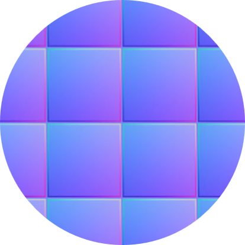

ForestSplats
ForestSplats: Deformable transient field for Gaussian Splatting in the Wild
Authors: Wongi Park1, Myeongseok Nam1, Soomok Lee 2†
Affiliations: Department of 1Software and 2Artificial Intelligence, Ajou university
† Corresponding Authors

Authors: Wongi Park1, Myeongseok Nam1, Soomok Lee 2†
Affiliations: Department of 1Software and 2Artificial Intelligence, Ajou university
† Corresponding Authors
Recently, 3D Gaussian Splatting (3DGS) has emerged showing real-time rendering speeds and high-quality results in static scenes. Although 3DGS show effective in static scenes, their performance significantly degrades in the real-world environments due to transient objects, lighting variations, and large levels of occlusion. To tackle this, existing methods estimate occluders or transient elements by leveraging pre-trained models or integrating additional transient field pipelines. However, these methods still suffer from two defects: 1) Utilizing semantic features from Vision Foundation model (VFM) cause additional computational cost or during optimization. 2) Transient field struggles to define clear boundaries for occluders due to lack of explicit transient modeling. To address these problem, we propose ForestSplats, an novel approach that leverages deformable transient field and hybrid masking strategy to effectively decompose static scenes from transient distractors. We designed the transient field to be deformable, capturing per-view transient elements. Furthermore, we introduce a hybrid masking strategy that refines the boundaries of occluders by leveraging photometric error maps and percentage of outlier. Additionally, we propose an uncertainty-aware densification to prevent unnecessary Gaussians from blurring the boundaries of occluders. Through extensive experiments across several benchmark datasets, we demonstrate ForestSplat not only outperforms state-of-the-art reconstruction quality, but also show efficiency for distractor-free novel view synthesis.
We visualize ForestSplats on the Photo Tourism and NeRF On-the-go datasets. Our method produces high-quality 3D renderings and distractor-free novel view synthesis results. More results are shown below:
braemenberug gate
Sacer Coeur
Trevi Fountain
Corner
Fountain
Mountain
Patio-high
Patio
Spot
We provide qualitative results on the Photo Tourism and NeRF On-the-Go datasets. Our method addresses occluders in the scene using superpixel-aware masking and a multi-stage training strategy.


We conducted a comprehensive analysis of OmniObject3D, selecting scanned instances as ground
truth within the same domain.
By constructing prompt texts, we synthesized three NeRF models and three  3DGS models, and
supplemented them with results from the advanced commercial model Clay and some Nerf-based
results from GPTEval3D.
We collected a total of over 1,200 3D models from ten different
synthesis methods, including both synthesized and real scanned data.
3DGS models, and
supplemented them with results from the advanced commercial model Clay and some Nerf-based
results from GPTEval3D.
We collected a total of over 1,200 3D models from ten different
synthesis methods, including both synthesized and real scanned data.
Additionally, we performed Texture Anomaly Description Annotations corresponding to the RGB four views of the synthesized 3D data, as well as  Normal Anomaly Description Annotations. Notably, besides the multi-view format, the 3D data also supports point clouds and panoramic videos. (Use LabelU for annotation)
Based on summarization and regeneration methods, we generated counterfeit texts similar to the original texts using mainstream models such as GPT-4o, Qwen-VL-Max, Llama 3.1-405B. We collected eight categories of text data, pairing each sample with a real text and a model-generated similar text, totaling 4,320 text entries. Our text data were categorized by length and language, including short texts (50-100 characters), medium texts (100-200 characters), and long texts (over 300 characters), with a 1:1 ratio of Chinese to English data.
Click here to view different types of text:
In terms of problem setting, our questions are mainly divided into the following four types:
*Here we have set up four question banks, each of which contains Judgement and Multiple-Choice questions, and users can experience some of the questions.
Click here to change examination:
Click here to choose your answer:
Click here to choose your answer:
In this project, we introduced LOKI, a multimodal benchmark designed to evaluate the performance of large multimodal models in detecting synthetic data across various modalities. We conducted a comprehensive study of LMMs’ performance on video, image, 3D, audio, text, and specialized subdomains, and we also analyzed LMMs’ ability to explain detailed anomalies in synthetic data. The experimental results indicate that LMMs have a certain level of competence in detecting synthetic data and a preliminary ability to explain anomalies. However, LMMs require further development in specialized domains and underexplored modalities such as audio and 3D data. Additionally, their reasoning and comparative analysis capabilities need improvement. The introduction of LOKI marks a significant step forward in advancing explainable synthetic data detection in the context of the growing prevalence of synthetic content on the internet and in evaluating LMM capabilities in the pursuit of AGI. Moreover, the relationship between synthesis and detection is adversarial yet mutually reinforcing; better and more interpretable synthetic detectors will further promote the development of AI synthesis technologies.
@article{ye2024loki,
title={LOKI: A Comprehensive Synthetic Data Detection Benchmark using Large Multimodal
Models},
author={Ye, Junyan and Zhou, Baichuan and Huang, Zilong and Zhang, Junan and Bai, Tianyi and
Kang, Hengrui and He, Jun and Lin, Honglin and Wang, Zihao and Wu, Tong and others},
journal={arXiv preprint arXiv:2410.09732},
year={2024}
}